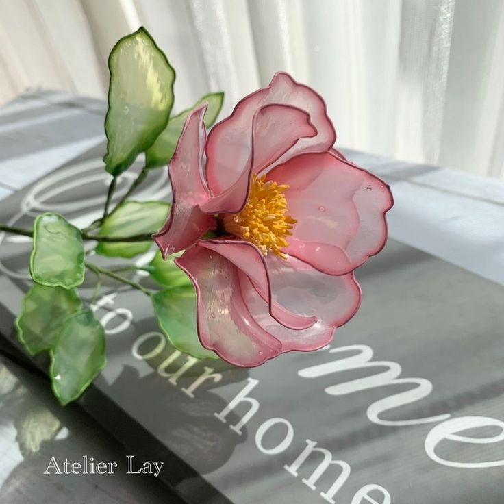
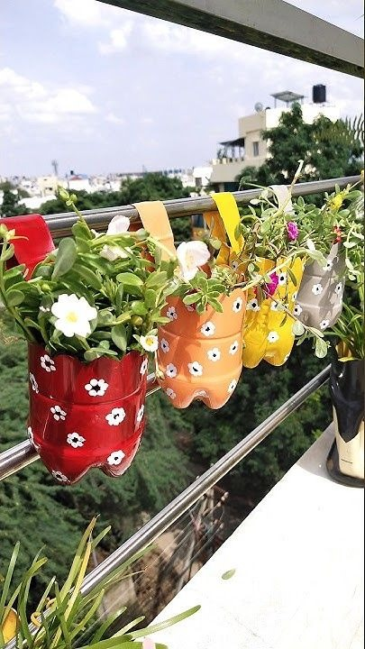
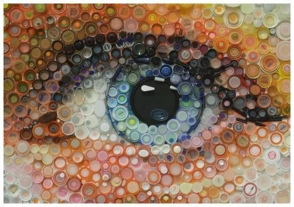

Malzemeler:
• Pet şişe
• Makas
• Boya (akrilik veya sprey boya)
• Sıcak silikon tabancası
• Kurdele veya tel (sap için)
Adımlar:
1- Pet şişesinin alt kısmını, 5-6 cm uzunluğunda düzgün şekilde kesin.
2- Şişenin alt kısmındaki kenarlara üçgen şeklinde kesikler yaparak yaprak formunu oluşturun.
3- Yaprakları istediğiniz renkte boyayın. Akrilik boya, pet şişelerinde iyi sonuç verir. Çiçek yaprağına doğal bir görünüm vermek için birkaç ton farklı renk kullanabilirsiniz.
4- Boya kuruduktan sonra, yaprakları bir araya getirin ve sıcak silikon ile sabitleyin.
5- Yaprakların ortasına bir tel veya kurdele yerleştirip çiçeğin sapını oluşturun.

Malzemeler:
• Pet şişe
• Makas
• Toprak
• Bitki
Adımlar:
1- Pet şişesinin üst kısmını (ağız kısmını) yaklaşık 1/3 kadar kesin. Bu, saksınızın kenarını oluşturacak.
2- Şişenin alt kısmını bırakın. Alt kısım, bitkinin köklerinin rahatça yerleşebilmesi için açığa kalan alan olacak.
3- Şişenin alt kısmına birkaç küçük delik açın. Bu delikler, saksınızın altından fazla suyun akmasını sağlar.
4- Saksınıza toprak ekleyin ve bitkinizi toprağa yerleştirip etrafını sıkıştırarak bitkinizin yerleşmesini sağlayın.

Malzemeler:
• Pet şişe kapakları
• Karton
• Yapıştırıcı (sıcak silikon veya güçlü tutkal)
• Boya (isteğe bağlı)
• Fırça (isteğe bağlı)
• Çerçeve (isteğe bağlı)
Adımlar:
1- Pet şişe kapaklarını temizleyin ve boyayın (isteğe bağlı). Boya, kapaklara farklı renkler ekleyerek tabloyu daha canlı hale getirecektir.
2- Kartonu istediğiniz boyutta kesin. Bu karton, tablonuzun zeminini oluşturacak.
3- Kapakları kartonun üzerine düzgün bir şekilde yerleştirin. Kapakları istediğiniz şekilde (desenli, geometrik, soyut vb.) sıralayın.
4- Kapakları yapıştırıcı ile sabitleyin. Sıcak silikon veya güçlü tutkal kullanarak her kapağı kartona sağlamca yapıştırın.
5- Yapıştırıcı kuruduktan sonra kapaklar sağlam bir şekilde yerinde olacaktır.
6- Tablonuzu bir çerçeve ile tamamlayabilirsiniz.